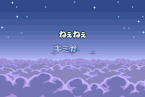
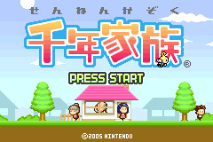

Sennen Kazoku (Japan) (Rev 1)
Stateless / Passcode
Cartridge Identity
- Game Code
BKAJ(FamilyBKA)- Header Title
SENNENKAZOKU- Maker / Revision
01/ rev1- ROM Size
- 16.0 MiB (16,777,216 B)
- Save Media
None / Unknown- SHA-256
219f91b477b908cc391aa9cc05acd17c41f5d220588dd6debf40ba5da1af41de
Screenshots


Cartridge Storage Architecture: Stateless / Passcode
Zero non-volatile battery hardware: This cartridge PCB contains ROM only (no SRAM, Flash, or EEPROM chips). Progression is preserved via on-screen passcodes or session-only gameplay. No
.sav file is generated or required.
Regional Variants & Revisions (Family BKA)
- Sennen Kazoku (Japan) (
BKAJ, 16 MiB) - Sennen Kazoku (Japan) (Rev 1) (Virtual Console) (
BKAJ, 16 MiB)